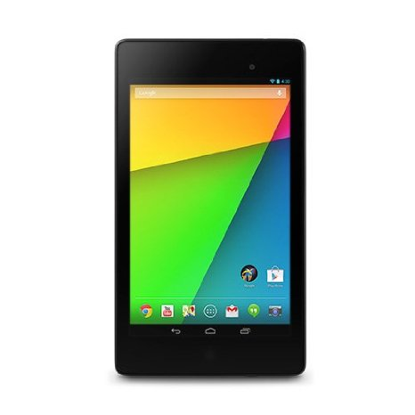

Introduction
A year after the original took the tablet market by storm, the second generation ASUS Nexus 7 has arrived to take part in an altogether different ballgame. With the first generation of the compact slate having established the Nexus 7 brand as the most popular Android tablet available on the market, it is up to the newcomer to elevate it even further and sway potential users away from the Apple iPad Mini and Amazon's Kindle HD.
At a first glance, the new ASUS Nexus 7 appears to be everything a tablet sequel is supposed to be. It is thinner, lighter, more powerful, and better put together. And naturally, in a fashion befitting the release of a new Nexus device, the compact tablet sequel comes with a new Android version out of the box.
Here goes the list of talents, which the second generation ASUS Nexus 7 has to offer.
Key features
7" LED-backlit IPS LCD capacitive touchscreen with a resolution of 1920 x 1200 pixels, 16M colors Android 4.3 Jelly Bean out of the box with the best update support in the business 1.5 GHz quad-core Krait CPU, Adreno 320 GPU, 2GB of RAM, Qualcomm Snapdragon S4 Pro chipset 5 MP autofocus camera with face detection; 1080p video recording @ 30fps 1.2MP front-facing camera 16/32GB internal storage Dual-band Wi-Fi 802.11 a/b/g/n support Optional LTE support NFC connectivity GPS with A-GPS connectivity Bluetooth v4.0 LE microUSB port with USB host and TV-out (1080p) support, MHL, charging Accelerometer, gyroscope and proximity sensor Wireless charging (Qi charging standard) Standard 3.5 mm audio jack Built-in stereo speakers 3950 mAh battery Thin and light construction; solid build quality
Main disadvantages
Awkwardly positioned stereo speakers Poor video codec support out of the box Memory not expandable Limited availability at launch Unlike the first Nexus 7 whose spec sheet sported some notable hardware compromises, the second generation of the slate appears to be a much more balanced product with no major omissions. The tablet ticks all the right boxes to find a spot in the Android tablets' top league - from the ultra-sharp display, through the capable chipset, all the way to the latest OS version, with timely updates guaranteed by Google itself. Google has also ramped up its attention towards the tablet realm recently, so the long-standing lack of quality apps for tablets may finaly be taken care of in the year ahead. This would certainly help the cause of the 2013 ASUS Nexus 7 in expanding its reach beyond the current Android users.